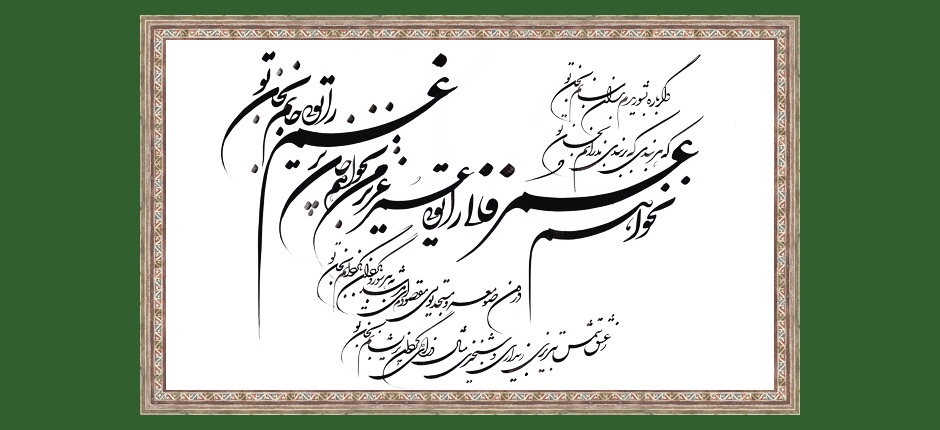

Music & Melodies of the Persian Ismaili Qasideh
Introduction | Modes | Melodies | Musical Instruments | Qasideh Tradition | Qasideh Collection
Qasideh | Amadam

Original calligraphy by Ustad Esmaili Mood from Iran inspired by verses 1, 3, 8 and 13 of the qasideh Digar barah bishuridam.Listen to Amadam (verses 1, 2, 3, 5, 6 and 8):
| Translation | Transliteration | Lyrics |
|---|---|---|
| I have come to place my face on the soil upon which my beloved treads; I have come to apologise for a moment for what I have done. | Āmadam tā rū niham bar khāk-i pāy-i yār-i khud Āmadam tā ʿudhr khāham sāʿātī az kār-i khud | آمدم تا رو نهم بر خاک پای یار خود آمدم تا عذر خواهم ساعتی از کار خود |
| I have come to resume the service in his garden; I have come to set fire to the thorns of my life. | Āmadam kaz sar bigīram khidmat-i gulzār-i ū Āmadan kātash bīyāram dar zanam dar khār-i khud | آمدم کز سر بگیرم خدمت گلزار او آمدم کآتش بیارم درزنم در خار خود |
| I have come to get purified from the dust of whatever has gone by; I have come to consider my good deeds evil, in pursuit of my beloved. | Āmadam tā ṣāf gardam az ghubār-i har chi raft Nīk-i khud rā bad shumāram az pay-i dildār-i khud | آمدم تا صاف گردم از غبار هر چه رفت نیک خود را بد شمارم از پی دلدار خود |
| I have come with weeping eyes so that my eyes can see the springs of Paradise in the love of my great champion. | Āmadam bā chashm-i giryān tā bibīnad chashm-i man Chashmih-hāy-i salsabīl az mihr-i ān ʿayyār-i khud | آمدم با چشم گریان تا ببیند چشم من چشمههای سلسبیل از مهر آن عیار خود |
| O abstract love! Rise! Rise and resume love! I am now dead and I have been emptied of my confession or denials. | Khīz ay ʿishq-i mujarrad mihr rā az sar bigīr Murdam-u khālī shudam ziqrār-u az inkār-i khud | خیز ای عشق مجرد مهر را از سر بگیر مردم و خالی شدم ز اقرار و از انکار خود |
| Without your purification, no one can become purified in existence; no one can ever get rid of his sorrows or care for himself without you. | Zānkih bī ṣāf-i tu natwān ṣāf gashtan dar wujūd Bī tu natwān rast hargiz az gham-u tīmār-i khud | زانک بیصاف تو نتوان صاف گشتن در وجود بی تو نتوان رست هرگز از غم و تیمار خود |
| I have now chosen silence in apparition but you know well that inside me I have bloody words in this heart of mine which is drinking blood. | Man khamush kardam bi ẓāhir līk dānī kaz darūn Guft-i khūn ālūd dāram dar dil-i khūnkhār-i khud | من خمش کردم به ظاهر لیک دانی کز درون گفت خون آلود دارم در دل خون خوار خود |
| While I am silent, gaze upon my face for some time and you shall find your own, a hundred thousand of your own, signs on my face. | Dar nigar dar hāl-i khāmūshī bi rūyam nīk nīk Tā bibīnī bar rukh-i man ṣad hizār āthār-i khud | درنگر در حال خاموشی به رویم نیک نیک تا ببینی بر رخ من صد هزار آثار خود |
| I now shorten this lyric; the rest of it is in my heart. I will tell you the rest if you make me drunk with your intoxicating eyes. | Īn ghazal kūtāh kardam bāghīy-i īn dar dilast Gūyam ar mastam kunī az nargis-i khammār-i khud | این غزل کوتاه کردم باقی این در دل است گویم ار مستم کنی از نرگس خمار خود |
| O silent in whatever you used to say! O one separated from your beloved! How did you become so perplexed with all your clever reasoning? | Ay khamūsh az guft-i khīsh-u ay judā az juft-i khīsh Chūn chunīn ḥayrān shudī az ʿaql-i zīraksār-i khīsh | ای خموش از گفت خویش و ای جدا از جفت خویش چون چنین حیران شدی از عقل زیرکسار خود |
| O silent one! How are you with these fiery thoughts? New thoughts and ideas arrive with their armies dragging behind them! | Ay khamush chūnī az īn andīshah-hā-yi ātashīn Mīrasad andīshah-hā bā lashkar-i jarrār-i khud | ای خمش چونی از این اندیشههای آتشین میرسد اندیشهها با لشکر جرار خود |
| People are silent when they are on their own and they speak when they are with people; no one tells his secrets to the walls and the doors. | Waqt-i tanhāʾī khamush bāshand-u bā mardum bi guft Kas nagūyad rāz-i dil rā bā dar-u dīwār-i khud | وقت تنهایی خمش باشند و با مردم بگفت کس نگوید راز دل را با در و دیوار خود |
| Do you not find any people around that you have chosen silence? And do you not find anyone in whom to confide your words? | Tu magar mardum nimīyābī ki khāmush kardah-ʾī Hīch kas rā mī nabīnī maḥram-i guftār-i khud | تو مگر مردم نمییابی که خامش کردهای هیچ کس را مینبینی محرم گفتار خود |
| Maybe you belong to the pure world and you do not mingle, by nature, with these dogs of nature polluted with their corpses! | Tu magar az ʿālam-i pākī nayāmīzī bi ṭabʾ Bā sagān-i ṭabʿ kālūdand az murdār-i khud | تو مگر از عالم پاکی نیامیزی به طبع با سگان طبع کآلودند از مردار خود |
 Download the mp3 of the Qasideh
Download the mp3 of the Qasideh
Last updated: 09/07/2014 13:51